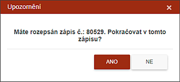

Ukládání zápisu
Informace ze zápisu se ukládají po každém objektu, který se objevuje na obrazovce. Ukládání však probíhá pouze do dočasné tabulky,
Zápis je možné z vážných důvodů přerušit. Systém před započetím dalšího zápisu skutečnost o nedokončeném zápisu oznámí uživateli dialogovým oknem.

Pokud uživatel chce pokračovat v rozepsaném zápise, systém jej otevře na místě, kde uživatel skončil. Pokud se však uživatel rozhodne v něm nepokračovat, rozpracovaný zápis bude odstraněn ze systému.